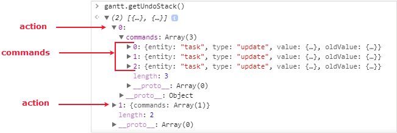

dhtmlxGantt Chart allows you to undo/redo the made changes. To enable this functionality, you need to enable the undo plugin using the gantt.plugins method.
gantt.plugins({
undo: true
});
By default, both Undo and Redo features are enabled. To control the Undo/Redo functionality, make use of the undo / redo configuration options.
You can use Undo and Redo separately by switching off one of the options:
// just the Redo functionality is enabled
gantt.config.undo = false;
gantt.config.redo = true;
Related sample: Undo/Redo changes in Gantt
To revert the changes made in the Gantt Chart, use the undo method:
gantt.undo();
In order to redo the previously undone changes, make use of the redo method:
gantt.redo();
Starting from v6.3 the undo()/redo() methods are also available via the gantt.ext.undo object. See the Undo Extension article.
All user actions in the Gantt Chart are implemented as arrays that contain sets of command objects. Gantt stores a stack of the most recently executed commands. The undo.js extension can make reverse operations out of them and execute them in Gantt.
When you need to undo or redo a command, the extension takes the most recent command object and executes the corresponding method.
To get the stack of the stored undo actions, use the getUndoStack method:
var stack = gantt.getUndoStack();
To return the stack of the stored redo actions, apply the getRedoStack method:
var stack = gantt.getRedoStack();
The returned stack is an array of the undo user actions. Each user action contains a set of commands. A command is an object with the following attributes:
Have a look at the example below:

The getUndoStack() method returns a stack with 2 undo user actions. The first action contains 3 commands, while the second one has 1 command.
Starting from v6.3 the getUndoStack()/getRedoStack() methods are also available via the gantt.ext.undo object. See the Undo Extension article.
There is a possibility to clear the stack of Undo/Redo commands via the related Gantt API.
To clear the stack of the stored undo commands, use the clearUndoStack method:
gantt.clearUndoStack();
To clear the stack of the stored redo commands, use the clearRedoStack method:
gantt.clearRedoStack();
Starting from v6.3 the clearUndoStack()/clearRedoStack() methods are also available via the gantt.ext.undo object. See the Undo Extension article.
It is possible to undo/redo changes made to your code. To do this you have to use the undo()/redo() methods in combination with the saveState() method of the gantt.ext.undo object. The saveState() method allows saving the initial value of the task before the code changes are made.
For example, this is how you can revert the initial text of the task after it was reassigned in the code to another value:
const undoExtension = gantt.ext.undo;
const task = gantt.getTask(1);
console.log(task.text);
// -> "task 1";
undoExtension.saveState(task.id, "task");
task.text = "modified";
gantt.updateTask(1);
console.log(task.text);
// -> "modified";
undoExtension.undo();
console.log(task.text);
// -> "task 1";
The saveState() method saved the "task 1" text of the task with the id = 1 before it was updated to the "modified" text. Then the gantt.ext.undo.undo() method reverted the changes made in the code to the start value.
For details about the saveState() method, see the Undo Extension article.
There are several settings that help to adjust the Undo operation.
To specify the actions to which Undo will be applied, use the undo_actions parameter:
gantt.config.undo_actions = {
update:"update",
remove:"remove", // remove an item from the datastore
add:"add"
};
To define how many steps can be reverted, apply the undo_steps parameter:
gantt.config.undo_steps = 10;
By default, it's possible to undo 10 actions.
You can also specify the entities that the undo operation will be applied for in the undo_types parameter:
gantt.config.undo_types = {
link:"link",
task:"task"
};
There is a set of helpful Undo/Redo-related events: